DreamWaQ：通过隐式地形想象与深度强化学习实现鲁棒四足运动
DreamWaQ: Learning Robust Quadrupedal Locomotion With Implicit Terrain Imagination via Deep Reinforcement Learning
第 1 页Page 1PDF p.1
DreamWaQ: Learning Robust Quadrupedal Locomotion With Implicit Terrain Imagination via Deep Reinforcement Learning
核对原版排版
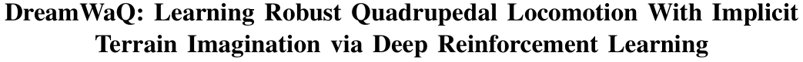
DreamWaQ：基于深度强化学习通过隐式地形想象学习鲁棒四足运动
I Made Aswin Nahrendra1 , Byeongho Yu1 , and Hyun Myung1∗ , Senior Member, IEEE
核对原版排版
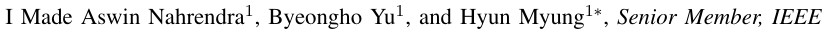
I Made Aswin Nahrendra1、Byeongho Yu1与Hyun Myung1∗，IEEE高级会员
Abstract — Quadrupedal robots resemble the physical ability of legged animals to walk through unstructured terrains. However, designing a controller for quadrupedal robots poses a significant challenge due to their functional complexity and requires adaptation to various terrains. Recently, deep reinforcement learning, inspired by how legged animals learn to walk from their experiences, has been utilized to synthesize natural quadrupedal locomotion. However, state-of-the-art methods strongly depend on a complex and reliable sensing framework. Furthermore, prior works that rely only on proprioception have shown a limited demonstration for overcoming challenging terrains, especially for a long distance. This work proposes a novel quadrupedal locomotion learning framework that allows quadrupedal robots to walk through challenging terrains, even with limited sensing modalities. The proposed framework was validated in real-world outdoor environments with varying conditions within a single run for a long distance.
核对原版排版
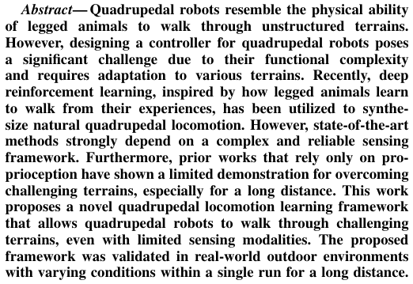
摘要 — 四足机器人具备类似于有足动物在非结构化地形中行走的物理运动能力。然而，由于四足机器人功能的复杂性以及适应多样化地形的需求，为其设计控制器带来了巨大挑战。近年来，受有足动物从自身经验中学习行走这一机制的启发，深度强化学习已被用于生成自然的四足运动。然而，当前最先进的方法严重依赖于复杂且可靠的感知框架。此外，先前仅依赖本体感觉的研究在应对挑战性地形（尤其是长距离行走）方面的验证十分有限。本研究提出了一种新颖的四足运动学习框架，使四足机器人即便在感知模态受限的情况下，也能够在复杂多变的地形中行走。所提出的框架在真实多变的室外环境中进行了验证，实现了单次运行下的长距离稳定行走。
I. INTRODUCTION
核对原版排版
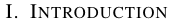
I. 引言
In recent years, quadrupedal robots have played an important role in various applications, such as industrial inspection and exploration [1]–[6]. Unlike wheeled mobile robots, quadrupedal robots can traverse unstructured terrains but are relatively difficult to control. Conventional model-based controllers often require a complex pipeline consisting of state estimation, trajectory optimization, gait optimization, and actuator control [1]–[3], [7]–[11]. Such a complex modelbased pipeline requires considerable human effort for accurate modeling and rigorous parameter tuning. Moreover, the linearized quadrupedal model often limits its performance, hindering its full capability.
核对原版排版
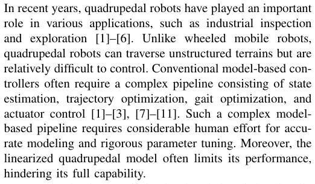
近年来，四足机器人在工业巡检与勘探等多种应用中发挥着重要作用 [1]–[6]。与轮式移动机器人不同，四足机器人能够穿越非结构化地形，但控制难度相对更高。传统的基于模型的控制器通常需要一套复杂的处理流程，包括状态估计、轨迹优化、步态优化和执行器控制 [1]–[3], [7]–[11]。这种复杂的基于模型的处理流程需要投入大量人工来进行精确建模和严格的参数整定。此外，线性化的四足机器人模型往往会限制其性能，阻碍其充分发挥自身潜能。
Legged animals can efficiently plan their gait by visually perceiving the surrounding terrains. This natural mechanism has inspired many works on training a perceptive locomotion policy via deep reinforcement learning (RL) that can enable a quadrupedal robot to traverse unstructured terrains [12]– [15]. In these frontier works, the robot is equipped with exteroceptive sensors such as a camera or LiDAR to observe its surroundings. Subsequently, exteroception is used with the controller to plan the robot’s trajectory and gait to traverse through the environment safely.
核对原版排版
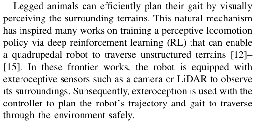
有足动物能够通过视觉感知周围地形来高效规划步态。这一自然机制启发了许多通过深度强化学习（RL）训练感知式运动策略的研究，使四足机器人能够穿越非结构化地形 [12]–[15]。在这些前沿工作中，机器人配备了诸如相机或激光雷达（LiDAR）等外感受传感器来观察周围环境。随后，外部感知信息与控制器结合，用于规划机器人的运动轨迹和步态，从而安全地穿越环境。
However, exteroception may not always be dependable. Cameras can malfunction in adverse weather and lighting
核对原版排版
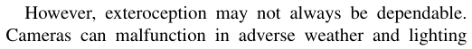
然而，外部感知并不总是可靠的。在恶劣的天气和光照
This work was supported by Korea Evaluation Institute of Industrial Technology (KEIT) grant funded by the Korea Government (MOTIE) (No. 20018216, “Development of Mobile Intelligence SW for Autonomous Navigation of Legged Robots in Dynamic and Atypical Environments for Real Application”). The students are supported by BK21 FOUR.
核对原版排版
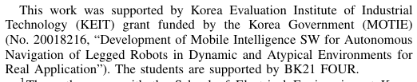
本项工作得到了韩国政府产业通商资源部（MOTIE）资助的韩国产业技术评价院（KEIT）项目支持（编号：20018216，“Development of Mobile Intelligence SW for Autonomous Navigation of Legged Robots in Dynamic and Atypical Environments for Real Application”）。参与学生获得了 BK21 FOUR 的资助。
1The authors are with the School of Electrical Engineering at Korea Advanced Institute of Science and Technology (KAIST), Daejeon, 34141, Republic of Korea. {anahrendra, bhyu, hmyung}@kaist.ac.kr
核对原版排版
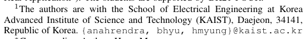
1作者均任职于韩国科学技术院（KAIST）电气工程学院，韩国大田，34141。{anahrendra, bhyu, hmyung}@kaist.ac.kr
∗ Corresponding Author: Hyun Myung
核对原版排版
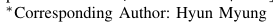
∗ 通讯作者：Hyun Myung
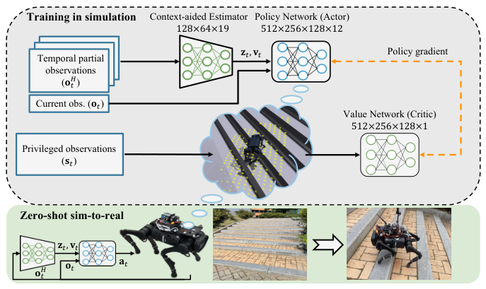
Fig. 1: Overview of DreamWaQ. By learning a locomotion policy in a simulation, the robot can walk through challenging terrains such as stairs with zero-shot sim-to-real.
核对原版排版
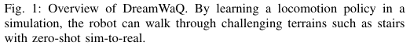
图 1：DreamWaQ 概览。通过在仿真中学习运动策略，机器人能够以零样本仿真到现实迁移（zero-shot sim-to-real）的方式在楼梯等挑战性地形中行走。
conditions, and while a 3D LiDAR can be utilized to distinguish ground and traversable regions, accurately estimating the physical characteristics of the terrain remains challenging [16]–[18]. For instance, snow may appear as a solid and passable surface, but it is actually soft and pliable. Additionally, tall grass that appears impassable to a camera can still be easily traversed by legged robots.
核对原版排版
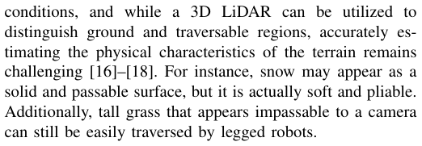
条件下，相机可能会发生故障；尽管 3D 激光雷达（LiDAR）可用于区分地面与可通行区域，但要准确估计地形的物理特性仍极具挑战 [16]–[18]。例如，积雪表面看起来可能坚实且适于通行，但实际上松软易陷。此外，在相机看来无法通行的高草丛，有足机器人实际上仍可轻松穿越。
Meanwhile, proprioceptive sensors, such as an inertial measurement unit (IMU) and joint encoder, are relatively light and robust compared to exteroceptive sensors. Recent works have shown that by combining different proprioception modalities, a quadrupedal robot can learn to estimate its surrounding terrain [19]–[23] and body state [24]. However, these works have a limited empirical demonstration for a long-distance operation with various challenging terrains, where legged robots may fail due to high uncertainties and estimation errors.
核对原版排版
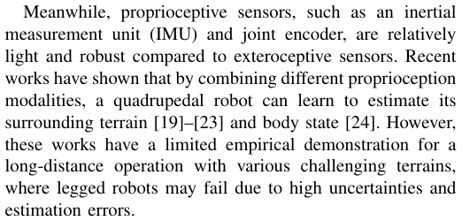
与此同时，与外感受传感器相比，诸如惯性测量单元（IMU）和关节编码器等本体感受传感器相对轻量且鲁棒。近期的研究表明，通过融合不同的本体感觉模态，四足机器人能够学会估计其周围地形 [19]–[23] 和机体状态 [24]。然而，这些工作在包含多种挑战性地形的长距离运行方面的实证验证十分有限，而在该场景下，高度的不确定性和估计误差很容易导致有足机器人运行失败。
Estimating the surrounding terrain’s properties via proprioception while learning a locomotion policy requires an iterative process [19], [20], [23]. The policy needs to understand the terrain properties to learn robust behavior. However, to adequately learn the terrain properties, the robot should be able to walk accordingly and explore a wide spectrum of terrain properties. This dilemma is often called the representation learning bottleneck [25], which can hinder optimal policy learning. Therefore, a learning framework that jointly learn a robust policy with an accurate environment representation is required.
核对原版排版
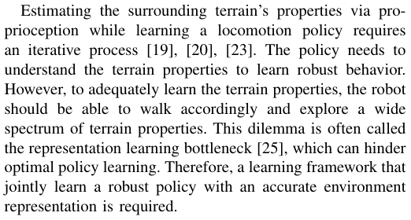
在学习运动策略的同时通过本体感觉估计周围地形的属性需要一个迭代过程 [19], [20], [23]。策略需要了解地形属性才能学到鲁棒的运动行为；然而，为了充分学习地形属性，机器人又必须能够进行相应行走并探索广泛的地形特征。这种两难困境通常被称为表征学习瓶颈（representation learning bottleneck）[25]，它会阻碍最优策略的学习。因此，需要一种能够联合学习鲁棒策略与精确环境表征的学习框架。
In this paper, we proposed a framework called Dream Wa lking for Q uadrupedal Robots ( DreamWaQ ), that trains a robust locomotion policy for quadrupedal robots with
核对原版排版
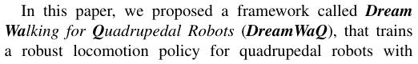
在本文中，我们提出了一个名为 DreamWaQ（Dream Walking for Quadrupedal Robots）的框架，该框架仅利用
展开第 1 页原版整页（含全部图表、公式与页眉页脚）
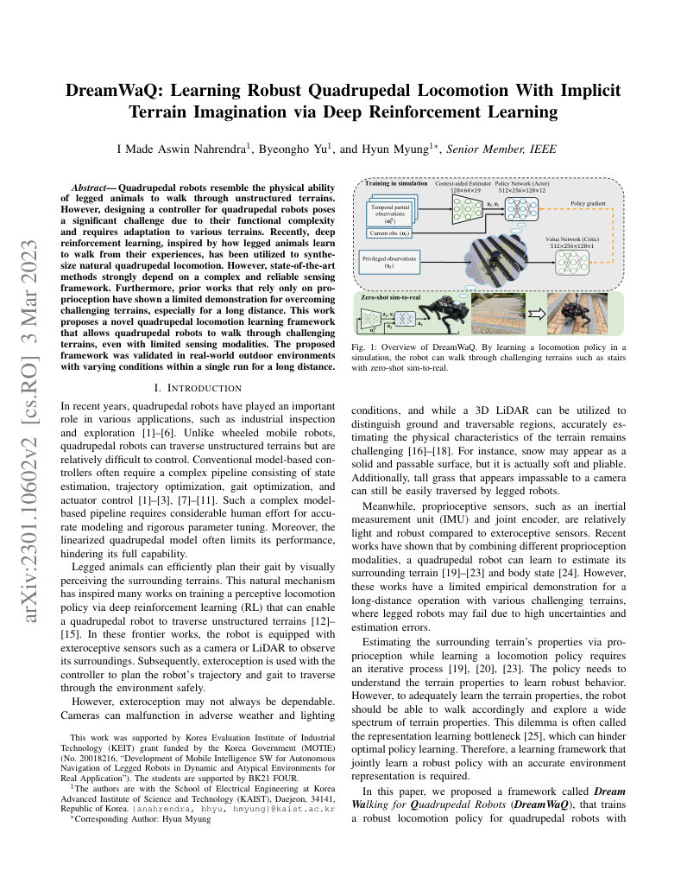
第 2 页Page 2PDF p.2
only proprioception via a deep RL algorithm. DreamWaQ trains a locomotion policy to implicitly infer the terrain properties, such as height map, friction, restitution, and obstacles. Consequently, the robot can adapt its gait to walk safely through various terrains. We deployed DreamWaQ on a Unitree A1 [26] robot to robustly walk through challenging natural and man-made environments.
核对原版排版
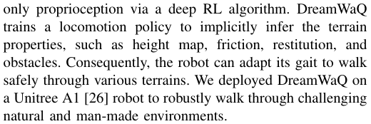
本体感觉，通过深度强化学习算法为四足机器人训练鲁棒的运动策略。DreamWaQ 训练运动策略以隐式推断诸如高度图、摩擦力、恢复系数和障碍物等地貌属性。因此，机器人能够自适应调整步态，安全穿越多种地形。我们将 DreamWaQ 部署在 Unitree A1 [26] 机器人上，实现了在复杂多变的自然与人造环境中的鲁棒行走。
In summary, the contributions of this work are threefold:
核对原版排版
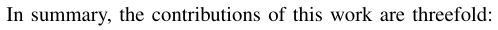
综上所述，本工作的贡献包含以下三个方面：
- 1) A novel locomotion learning framework via an asymmetric actor-critic architecture is proposed to implicitly imagine terrain properties using only proprioception.
核对原版排版
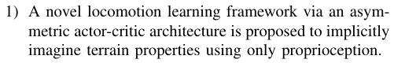
- 1) 提出了一种基于非对称行动者-评论家（actor-critic）架构的新型运动学习框架，仅利用本体感觉即可隐式想象地形属性。
- 2) A context-aided estimator network is proposed to estimate body state and environmental context jointly. Together with the policy, our method outperforms existing learning-based methods.
核对原版排版
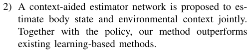
- 2) 提出了一种上下文辅助估计器网络，用于联合估计机体状态和环境上下文。与策略相结合，我们的方法性能优于现有的基于学习的方法。
- 3) A robustness and durability evaluation of the learned policy in the real world was conducted through walking in diverse outdoor environments. To the best of our knowledge, this is the first time a Unitree A1, which is significantly smaller that an ANYmal robot, has been demonstrated to sustainably walk on challenging terrain such as hills and yards.1
核对原版排版
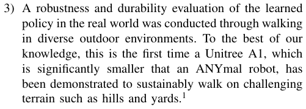
- 3) 通过在多样化的室外环境中行走，对真实世界中学得策略的鲁棒性与耐久性进行了评估。据我们所知，这是首次在尺寸显著小于 ANYmal 机器人的 Unitree A1 上，成功展示了在山丘和庭院等挑战性地形上的持久行走能力。1
The remainder of this paper is organized as follows. Section II discusses our proposed method thoroughly. Section III presents the experimental setting, results, and an in-depth comparative analysis of the proposed and baseline methods. Finally, Section IV concludes this work and briefly discusses directions for future work.
核对原版排版
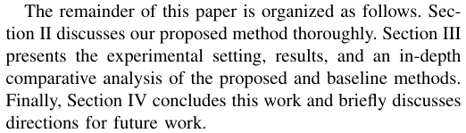
本文其余部分的组织结构如下：第 II 节深入探讨我们提出的方法；第 III 节介绍实验设置、实验结果以及对所提方法与基线方法的深度对比分析；最后，第 IV 节总结本研究并简要探讨未来的研究方向。
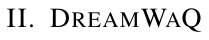
A. Preliminaries
核对原版排版
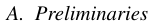
A. 预备知识
In this work, the environment is modeled as an infinite-horizon partially observable Markov decision process (POMDP), defined by the tuple M = ( S, O, A, d 0 , p, r, γ ). The full state, partial observation, and action are continuous, and defined by s ∈S , o ∈O , and a ∈A , respectively. The environment starts with an initial state distribution, d 0( s 0); progresses with a state transition probability p ( s t +1 | s t, a t ); and each transition is rewarded with a reward function, r : S × A →R . The discount factor is defined by γ ∈ [0 , 1). Additionally, in this paper, we define a temporal observation at time t over the past H measurements as oH t= � o t o t− 1 . . . o t−H � T . We also define a context vector, z t , which contains a latent representation of the world state. The context vector is inferred using the method that will be discussed in Section II-C.
核对原版排版
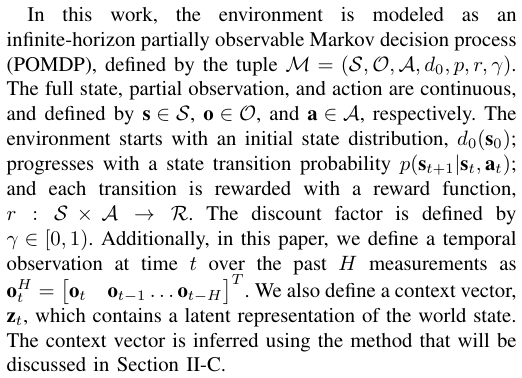
在本研究中，环境被建模为一个无限时域部分可观测马尔可夫决策过程（POMDP），由元组 M = ( S, O, A, d 0 , p, r, γ ) 定义。全状态、部分观测和动作均为连续变量，分别定义为 s ∈S、o ∈O 和 a ∈A。环境由初始状态分布 d 0( s 0) 开始；根据状态转移概率 p ( s t +1 | s t, a t ) 发生状态演化；每次状态转移均通过奖励函数 r : S × A →R 给予奖励。折扣因子定义为 γ ∈ [0 , 1)。此外，在本文中，我们将时间 t 处基于过去 H 次测量的时序观测定义为 〔行内公式见原版〕。我们还定义了上下文向量 z t，其包含世界状态的潜在表征。该上下文向量通过将在第 II-C 节中讨论的方法推断得出。
B. Implicit Terrain Imagination
核对原版排版
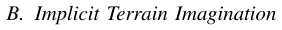
B. 隐式地形想象
Recent works have leveraged the teacher-student training paradigm [27]. Although it has been empirically shown that the student policy is as good as the teacher’s, behavior cloning (BC) bounds the student policy’s performance with the teacher policy [19], [20], [23]. Moreover, sequentially training the teacher and student networks is data inefficient [24]. The student policy might be unable to explore
核对原版排版
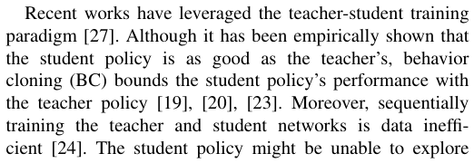
近期的研究采用了教师-学生训练范式 [27]。尽管实证表明学生策略的表现能够与教师策略相当，但行为克隆（BC）将学生策略的性能上限局限在教师策略的水平 [19], [20], [23]。此外，先后分别训练教师网络和学生网络在数据效率上较低 [24]。学生策略可能无法探索
failure states in which the teacher policy has learned in the early stage of learning using RL. This limitation is because, during BC, the student policy is only provided with good action supervision from the teacher policy.
核对原版排版
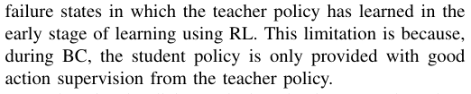
教师策略在利用强化学习（RL）进行早期学习阶段所经历过的失败状态。这种局限性的根源在于，在行为克隆（BC）期间，学生策略仅能获得来自教师策略的优秀动作监督信号。
For learning implicit terrain imagination, we adopted an asymmetric actor-critic architecture [28]. We discovered that the interplay between the policy and value networks in actorcritic algorithms is sufficient for learning a robust locomotion policy that could implicitly imagine the privileged observations, given partial temporal observations. In DreamWaQ, the policy (actor) receives temporal partial observations, oH t, as the input, while the value network (critic) receives the full state, s t , as shown in Fig. 1. In this work, we use H = 5. Consequently, the data efficiency during training is significantly increased because only one training phase is required. Moreover, the policy can explore all possible trajectories during training, increasing its robustness through generalization. In this work, the policy is optimized using the proximal policy optimization (PPO) algorithm [29].
核对原版排版
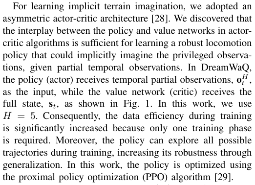
为了学习隐式地形想象，我们采用了一种非对称行动者-评论家（actor-critic）架构 [28]。我们发现，在行动者-评论家算法中，策略网络与价值网络之间的相互作用足以训练出一种鲁棒的运动策略——该策略能够在给定部分时序观测的情况下，隐式想象出特权观测信息。在 DreamWaQ 中，策略（actor）接收时序局部观测 oH t 作为输入，而价值网络（critic）则接收全状态 s t 作为输入，如图 1 所示。在本研究中，我们取 H = 5。因此，由于仅需一个训练阶段，训练期间的数据效率得到了显著提升。此外，策略在训练期间能够探索所有可能的轨迹，从而通过泛化性增强其鲁棒性。在本研究中，策略采用近端策略优化（PPO）算法 [29] 进行优化。
1) Policy Network: The policy, πφ ( a t| o t, v t, z t ) is a neural network parameterized by φ that infers an action a t , given a proprioceptive observation o t , body velocity v t , and latent state z t . o t is measured directly from joint encoders and IMU, while v t and z t are estimated by a context-aided estimator network (CENet), which will be discussed in Section II-C. o t is an n × 1 vector defined as follows:
核对原版排版
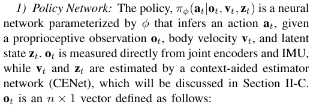
1) 策略网络：策略 πφ ( a t| o t, v t, z t ) 是由 φ 参数化的神经网络，其在给定本体感受观测 o t、机体速度 v t 和潜在状态 z t 的情况下推断动作 a t。o t 直接由关节编码器和 IMU 测量获得，而 v t 与 z t 则由上下文辅助估计器网络（CENet）进行估计，具体将在第 II-C 节中讨论。o t 为 n × 1 维向量，定义如下：
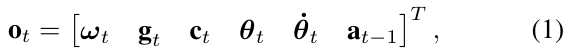
where ω t , g t , c t , θ t , θ˙ t , and a t− 1 are the body angular velocity, gravity vector in the body frame, body velocity command, joint angle, joint angular velocity, and previous action, respectively.
核对原版排版
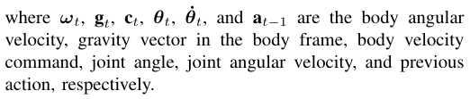
其中，ω t、g t、c t、θ t、θ˙ t 和 a t− 1 分别为机体角速度、机体坐标系下的重力向量、机体速度指令、关节角度、关节角速度以及上一时刻的动作。
2) Value Network: The value network is trained to output an estimation of the state value, V ( s t ). Unlike the policy, the value network receives the privileged observation, s t , which is defined as
核对原版排版
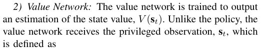
2) 价值网络：价值网络经过训练用于输出状态价值的估计值 V ( s t )。与策略网络不同，价值网络接收特权观测 s t，其定义为
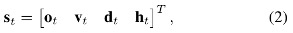
where d t is the disturbance force applied randomly on the robot’s body and h t is the height map scan of the robot’s surroundings as an exteroceptive cue for the value network. In the proposed DreamWaQ, the policy network is trained to implicitly infer d t and h t from proprioception.
核对原版排版
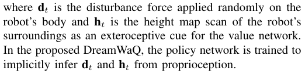
其中，d t 是随机施加在机器人机体上的扰动力，h t 是机器人周围的高度图扫描，作为输入给价值网络的外感受线索。在所提出的 DreamWaQ 中，策略网络经过训练能够从本体感觉中隐式推断出 d t 和 h t。
3) Action Space: The action space is a 12 × 1 vector, a t , corresponding to the desired joint angle of the robot. To facilitate learning, we train the policy to infer the desired joint angle around the robot’s stand still pose, θ stand. Hence, the robot’s desired joint angle is defined as
核对原版排版
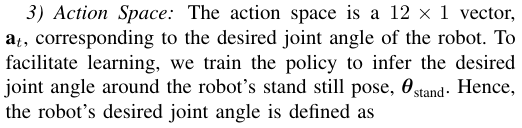
3) 动作空间：动作空间为一个 12 × 1 维向量 a t，对应于机器人的期望关节角度。为了便于策略学习，我们训练策略推断出机器人静止站立姿态 θ stand 附近的期望关节角度。因此，机器人的期望关节角度定义为：
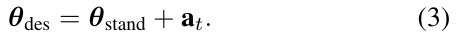
The desired joint angles are tracked using a proportional– derivative (PD) controller for each joint.
核对原版排版
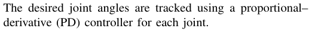
每个关节均使用比例-微分（PD）控制器对期望关节角度进行跟踪。
4) Reward Function: Our reward function closely follows other works [12], [19], [20], [22], [24], [30] to highlight the effect of DreamWaQ’s components instead of reward tuning. The reward function consists of task rewards for tracking the
核对原版排版
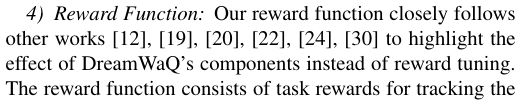
4) 奖励函数：我们的奖励函数紧密参考了其他相关工作 [12], [19], [20], [22], [24], [30]，以突出 DreamWaQ 各核心组件的作用，而非依赖繁琐的奖励调优。该奖励函数由用于跟踪
展开第 2 页原版整页（含全部图表、公式与页眉页脚）
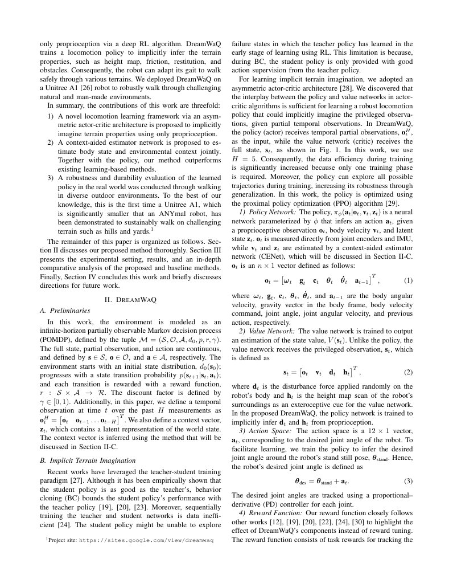
第 3 页Page 3PDF p.3
TABLE I: Reward function elements. exp( · ) and var( · ) are exponential and variance operators, respectively. ( · )des and ( · )cmd indicate the desired and commanded values, respectively. x, y, and z are defined on the robot’s body frame, with x and z pointing forward and upward, respectively. g , v xy , ω yaw, h , pf,z,k , vf,xy,k , and τ are the gravity vector projected into the robot’s body frame, linear velocities in the xy plane, yaw rate, body height w.r.t. the ground, foot height, foot lateral velocity, and joint torque, respectively.
核对原版排版
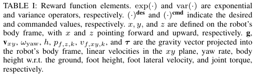
表 I：奖励函数各项。exp( · ) 和 var( · ) 分别表示指数运算符与方差运算符。( · )des 和 ( · )cmd 分别表示期望值与指令值。x、y 和 z 定义在机器人机体坐标系中，x 和 z 分别指向前方与上方。g、v xy、ω yaw、h、pf,z,k、vf,xy,k 以及 τ 分别表示投影到机器人机体坐标系中的重力向量、xy 平面内的线速度、偏航角速度、机体相对地面的高度、足端高度、足端横向速度以及关节力矩。
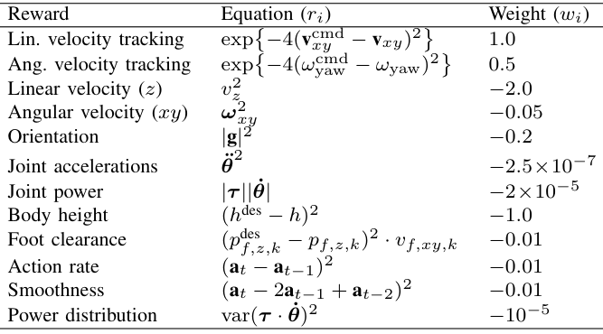
commanded velocity and stability rewards to produce a stable and natural locomotion behavior. The details of the reward function are presented in Table I. The total reward of the policy for taking an action at each state is given as:
核对原版排版
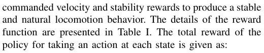
指令速度的任务奖励，以及用于产生平稳自然运动行为的稳定性奖励。奖励函数的具体细节如表 I 所示。策略在每个状态下执行动作所获得的总奖励给出如下：
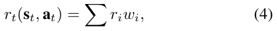
where i is the index of each reward, as shown in Table I.
核对原版排版
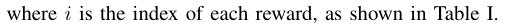
其中 i 为各项奖励的索引，具体如表 I 所示。
The complex reward function for learning a locomotion policy usually includes a motor power minimization term. However, this reward minimizes the overall power without considering each motor’s power usage balance. Consequently, in the long run, some motors might overheat faster than others. Therefore, we introduced a power distribution reward to reduce motor overheating in the real world by penalizing motors’ power with high variance over all motors used on the robot.
核对原版排版
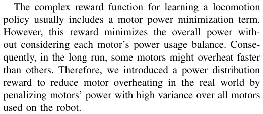
用于学习运动策略的复合奖励函数通常包含电机功率最小化项。然而，该奖励项仅最小化总功率，并未考虑各个电机之间功率使用的均衡性。因此，从长期运行来看，某些电机的过热速度可能会显著快于其他电机。为此，我们引入了功率分配奖励，通过惩罚机器人所有电机功率的高方差，在现实世界中减少电机过热问题。
5) Curriculum Learning: We utilized a game-inspired curriculum [12] to ensure progressive locomotion policy learning over difficult terrains. The terrains consisted of smooth, rough, discretized, and stair terrains with ten levels of inclination within [0° , 22°]. Furthermore, we found that utilizing the grid-adaptive curriculum [23] for low-speed locomotion results in a better and more stable turning that prevents foot tripping.
核对原版排版
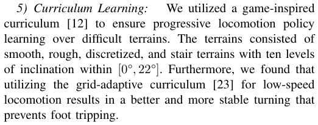
5) 课程学习：我们利用受游戏启发的课程学习机制 [12]，以确保在困难地形上逐步学习运动策略。所用地形包含平滑地形、粗糙地形、离散地形和楼梯地形，并在 [0°, 22°] 范围内设置了 10 个坡度级别。此外，我们发现针对低速运动采用网格自适应课程 [23] 能够实现更好且更稳定的转向，从而有效防止足部绊倒。
C. Context-Aided Estimator Network
核对原版排版
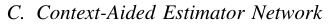
C. 上下文辅助估计器网络
The policy trained using the method described in Section II-B requires v t and z t as input, which can be estimated from proprioception. Prior works estimate z t as the latent variable for understanding terrain properties [20], [21], [23]. Additionally, estimating v t using a learned network significantly improves the locomotion policy’s robustness [24] by eliminating the accumulated estimation drift.
核对原版排版
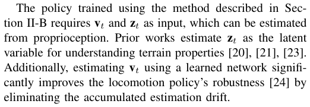
使用第 II-B 节所述方法训练的策略需要将 $v_t$ 和 $z_t$ 作为输入，这两个量可通过本体感受进行估计。先前的研究将 $z_t$ 作为理解地形特性的潜在变量进行估计 [20], [21], [23]。此外，利用学习得到的网络估计 $v_t$ 能够消除累积估计漂移，从而显著提升运动策略的鲁棒性 [24]。
Motivated by those prior works, we discovered that the interplay between terrain and body state estimates significantly improves body state estimation accuracy. Instead
核对原版排版
受这些先前工作的启发，我们发现地形估计与机体状态估计之间的相互作用能够显著提升机体状态估计的准确性。不同于
Fig. 2: The architecture of CENet consists of a body velocity estimation model and an auto-encoder model that shares a unified encoder. The shared encoder is trained to provide a robust body state and context estimation jointly.
核对原版排版
图 2：CENet 的架构由机体速度估计模型和自动编码器模型组成，二者共享一个统一的编码器。该共享编码器经过训练，可联合提供鲁棒的机体状态估计与上下文估计。
of only explicitly estimating the robot’s state, we propose a context-aided estimator network (CENet) architecture to jointly learn to estimate and infer a latent representation of the environment. The advantages of the proposed CENet are: 1) the network architecture is significantly simplified and runs synchronously during inference owing to the shared encoder architecture; 2) the encoder network can jointly learn the robot’s forward and backward dynamics via the autoencoding mechanism, hence, increasing its accuracy.
核对原版排版
仅仅显式估计机器人的状态，我们提出了一种上下文辅助估计器网络（CENet）架构，以联合学习对机体状态的估计以及对环境潜在表示的推断。所提出的 CENet 具有以下优势：1）得益于共享编码器架构，网络结构大幅简化，并在推理阶段同步运行；2）编码器网络可通过自动编码机制联合学习机器人的前向与后向动力学，从而提高其准确性。
CENet consists of a single encoder and a multi-head decoder architecture as shown in Fig. 2. The encoder network encodes oH t into v t and z t . The first head estimates v t , whereas the second reconstructs o t +1. We leveraged a β - variational auto-encoder ( β -VAE) [31]–[33] as the autoencoder architecture. CENet is optimized using a hybrid loss function, defined as follows:
核对原版排版
CENet 由单一编码器和多头解码器架构组成，如图 2 所示。编码器网络将 $o_t^H$ 编码为 $v_t$ 与 $z_t$。第一个头估计 $v_t$，而第二个头则重建 $o_{t+1}$。我们采用 $\beta$-变分自编码器（$\beta$-VAE）[31]–[33] 作为自编码器架构。CENet 使用混合损失函数进行优化，定义如下：
where L est and L VAE are the body velocity estimation and VAE loss, respectively. For explicit state estimation, we employed a mean-squared-error (MSE) loss between the estimated body velocity, ˜ v t , and the ground truth, v t , from the simulator as follows:
核对原版排版
其中 $L_{est}$ 和 $L_{VAE}$ 分别是机体速度估计损失与 VAE 损失。对于显式状态估计，我们在估计的机体速度 $\tilde{v}_t$ 与来自仿真器的真实值 $v_t$ 之间采用均方误差（MSE）损失，如下所示：
The VAE network is trained with the standard β -VAE loss, which consists of reconstruction and latent losses. We employed MSE for the reconstruction loss and KullbackLeibler (KL) divergence [34] as the latent loss. The VAE loss is formulated as
核对原版排版
VAE 网络使用标准的 $\beta$-VAE 损失进行训练，该损失由重建损失和潜在损失组成。我们采用 MSE 作为重建损失，并采用 Kullback-Leibler（KL）散度 [34] 作为潜在损失。VAE 损失公式如下：
L VAE = MSE (˜ o t +1 , o t +1) + βD KL( q ( z t| oH t)∥p(zt)),(7) where ˜ o t +1 is the reconstructed next observation, q ( z t| oH t) is the posterior distribution of the z t , given oH t.p(zt)is the context’s prior distribution parameterized by a Gaussian distribution. We chose a standard normal distribution for the prior distribution because all observations are normalized to have a zero mean and unit variance.
核对原版排版
$L_{VAE} = \text{MSE}(\tilde{o}_{t+1}, o_{t+1}) + \beta D_{KL}(q(z_t | o_t^H) \parallel p(z_t)), (7)$ 其中 $\tilde{o}_{t+1}$ 是重建的下一时刻观测，$q(z_t | o_t^H)$ 是给定 $o_t^H$ 时 $z_t$ 的后验分布。$p(z_t)$ 是由高斯分布参数化的上下文先验分布。我们选择标准正态分布作为先验分布，因为所有观测均已被归一化为零均值和单位方差。
Additionally, bootstrapping from an estimator network during policy network training may increase the sim-toreal robustness of the learned policy [24]. However, we discovered that bootstrapping may also harm the policy’s performance because of the large learning noise at the early stage of learning. Therefore, we propose an adaptive bootstrapping (AdaBoot) method that adaptively tunes the bootstrapping probability during training. AdaBoot is controlled by the coefficient of variation (CV), i.e., the ratio of
核对原版排版
此外，在策略网络训练过程中从估计器网络进行自举，可以提高所学策略的仿真到现实迁移（sim-to-real）鲁棒性 [24]。然而，我们发现由于学习初期的学习噪声较大，自举也可能会损害策略的性能。因此，我们提出了一种自适应自举（AdaBoot）方法，在训练过程中自适应调整自举概率。AdaBoot 由变异系数（CV）控制，即
第 4 页Page 4PDF p.4
the standard deviation to the mean, of the episodic reward over m domain-randomized environments. The key idea is that bootstrapping is required when the CV of m agents’ rewards is small to make the policy more robust against inaccurate estimation. However, it should not bootstrap when the agents have not learned well enough, as indicated by a large CV in their rewards. We define the bootstrapping probability for each learning iteration as follows:
核对原版排版
$m$ 个域随机化环境中回合奖励的标准差与均值之比。其核心思想是：当 $m$ 个智能体奖励的 CV 较小时需要进行自举，以使策略对不准确的估计更具鲁棒性。然而，当智能体尚未充分学习时（表现为其奖励具有较大的 CV），则不应进行自举。我们将每个学习迭代步的自举概率定义如下：
where p boot ∈ [0 , 1] is the bootstrapping probability and R is an m × 1 vector of episodic rewards from m domainrandomized environments. CV ( · ), and tanh( · ) are coefficient of variation and hyperbolic tangent operations, respectively. tanh is used to smoothly upper-bounds CV ( R ) to one.
核对原版排版
其中 $p_{\text{boot}} \in [0, 1]$ 为自举概率，$R$ 是来自 $m$ 个域随机化环境的回合奖励组成的 $m \times 1$ 向量。$\text{CV}(\cdot)$ 与 $\tanh(\cdot)$ 分别为变异系数和双曲正切运算。使用 $\tanh$ 是为了平滑地将 $\text{CV}(R)$ 的上限限制为 1。
III. EXPERIMENTS
核对原版排版
III. 实验
A. Compared Methods
核对原版排版
A. 对比方法
For a comparative evaluation, we compared the following algorithms with access to proprioceptions only:
核对原版排版
为了进行对比评估，我们在仅允许访问本体感受信息的条件下，对以下算法进行了对比：
- 1) Baseline [12]: The policy was trained without any adaptation mechanism.
核对原版排版
- 1) Baseline [12]：该策略在没有任何适应机制的情况下进行训练。
- 2) AdaptationNet [20], [21]: The policy was trained with an implicit environmental factor encoder using the student-teacher training framework. The policy network consists of 1D convolutional neural network (CNN) layers and multilayer perceptron (MLP) layers.
核对原版排版
- 2) AdaptationNet [20], [21]：该策略采用师生训练框架（student-teacher training framework），配合隐式环境因子编码器进行训练。策略网络由一维卷积神经网络（1D CNN）层和多层感知机（MLP）层组成。
- 3) EstimatorNet [24]: The policy was concurrently trained with an estimator network that explicitly estimates the body state without a context estimation.
核对原版排版
- 3) EstimatorNet [24]：策略与一个显式估计机体状态的估计器网络同步训练，但不包含上下文估计。
- 4) DreamWaQ w/o AdaBoot : The proposed method without adaptive bootstrapping.
核对原版排版
- 4) DreamWaQ w/o AdaBoot：所提出的方法，但不包含自适应自举。
- 5) DreamWaQ w/ AdaBoot : The proposed method with adaptive bootstrapping.
核对原版排版
- 5) DreamWaQ w/ AdaBoot：所提出的方法，包含自适应自举。
All the methods above were trained using the curriculum strategy and reward functions detailed in Section II. For a fair comparison, we used the same network architecture and fixed the initial random seeds for all methods. All networks used exponential linear units (ELUs) [35] as the activation functions for the hidden layers
核对原版排版
上述所有方法均使用第 II 节中详述的课程策略和奖励函数进行训练。为了公平对比，我们对所有方法使用了相同的网络架构并固定了初始随机种子。所有网络的隐藏层均采用指数线性单元（ELU）[35] 作为激活函数。
B. Simulation
核对原版排版
B. 仿真
We used the Isaac Gym simulator [36] based on the open-source implementation of [12] to synchronously train the policy, value, and CENet networks for 1 , 000 iterations. We trained 4 , 096 agents domain-randomized agents in parallel. The details of the randomized parameters are listed in Table II. For all algorithms, the policy network was trained using PPO with clipping range, generalized advantage estimation factor, and discount factor of 0 . 2, 0 . 95, and 0 . 99, respectively. The networks were optimized using the Adam optimizer [37] with a learning rate of 10−3 .
核对原版排版
我们基于 [12] 的开源实现，使用 Isaac Gym 仿真器 [36] 同步训练策略网络、价值网络以及 CENet 网络 1,000 个迭代步。我们并行训练了 4,096 个经过域随机化的智能体。随机化参数的详细信息列于表 II 中。对于所有算法，策略网络均采用 PPO 进行训练，其裁剪范围、广义优势估计因子和折扣因子分别为 0.2、0.95 和 0.99。网络采用 Adam 优化器 [37] 进行优化，学习率为 $10^{-3}$。
All training was performed on a desktop PC with an Intel Core i7-8700 CPU @ 3.20 GHz, 32 GB RAM, and an NVIDIA RTX 3060Ti GPU. Training using the DreamWaQ
核对原版排版
所有训练均在一台配备 Intel Core i7-8700 CPU @ 3.20 GHz、32 GB 内存和 NVIDIA RTX 3060Ti GPU 的台式电脑上进行。使用 DreamWaQ
TABLE II: Domain randomization ranges applied in the simulation.
核对原版排版
表 II：仿真中应用的域随机化范围。
Fig. 3: Learning curves of different algorithms. The results shown are obtained from ten different random seeds. The curves and shaded regions indicate the mean and standard deviation of the reward over ten different seeds, respectively. The oracle policy has access to the height map measurement of the robot’s surroundings as in [12].
核对原版排版
图 3：不同算法的学习曲线。展示的结果来自十个不同的随机种子。曲线和阴影区域分别表示十个不同种子下奖励的均值和标准差。如 [12] 所示，Oracle 策略可以获取机器人周围环境的高程图测量值。
algorithm took approximately one hour to generate data equal to approximately 46 days of training in the real world.
核对原版排版
算法耗时约一小时，所生成的数据相当于现实世界中约 46 天的训练量。
Fig. 3 compares the learning curves of DreamWaQ against those of all the other methods for learning the locomotion policy of a Unitree A1 robot. It can be seen that even though EstimatorNet initially has a higher mean episodic reward than AdaptationNet, its performance plummets after more iterations because it encounters more difficult terrains after longer training iterations. Conversely, DreamWaQ consistently outperforms all the other methods. Moreover, despite walking without exteroception, DreamWaQ performs almost as well as the oracle policy that has direct access to the surrounding terrain’s height map.
核对原版排版
图 3 对比了在学习 Unitree A1 机器人运动策略时，DreamWaQ 与所有其他方法的学习曲线。可以看出，尽管 EstimatorNet 最初比 AdaptationNet 具有更高的平均回合奖励，但随着迭代次数的增加，其性能急剧下滑，这是因为它在经历更长时间的训练迭代后遇到了更复杂的困难地形。相反，DreamWaQ 的表现始终优于所有其他方法。此外，尽管在没有外部感知的情况下行走，DreamWaQ 的表现几乎与能够直接获取周围地形高程图的 Oracle 策略不相上下。
C. Real-World Experimental Setup
核对原版排版
C. 真实世界实验设置
Real-world experiments were conducted using a Unitree A1 [26] robot. All estimation and control processes were run on an Intel NUC mounted on top of the robot and we used the PyBind interface provided in [38] to send the joint angle command to the robot. An additional onboard PC with a battery added a payload of approximately 500 g to the robot. During inference, the policy runs synchronously with the CENet at 50 Hz. The desired joint angles were tracked using a PD controller with proportional and derivative gains of Kp = 28 and Kd = 0 . 7, respectively at 200 Hz.
核对原版排版
真实世界实验采用 Unitree A1 [26] 机器人进行。所有估计与控制过程均运行在安装于机器人顶部的 Intel NUC 上，我们使用 [38] 提供的 PyBind 接口向机器人发送关节角度指令。配备电池的额外机载 PC 为机器人增加了约 500 g 的有效载荷。在推理阶段，策略与 CENet 以 50 Hz 的频率同步运行。期望关节角度采用 PD 控制器在 200 Hz 下进行跟踪，其比例增益和微分增益分别为 $K_p = 28$ 和 $K_d = 0.7$。
D. Command Tracking
核对原版排版
D. 指令跟踪
We evaluated the command tracking performance in a Gazebo simulation to obtain accurate ground truth. The robot was given random commands for ten minutes, and the commands were uniformly sampled from [ − 1 . 0 , 1 . 0] every ten seconds. For fair comparison, random commands were generated using the same random seed for each controller. Each controller was run five times with different random seeds to verify repeatability. We measured absolute tracking error (ATE) as the performance metric and constructed a
核对原版排版
我们在 Gazebo 仿真中评估指令跟踪性能，以获取准确的真实值。向机器人给定持续 10 分钟的随机指令，指令每 10 秒从 $[-1.0, 1.0]$ 中均匀采样。为公平对比，每个控制器所用的随机指令均使用相同的随机种子生成。每个控制器使用不同的随机种子运行 5 次，以验证可重复性。我们测量绝对跟踪误差（ATE）作为性能评价指标，并绘制了
第 5 页Page 5PDF p.5
Fig. 4: Command tracking error represented as a boxplot. vxeandv yeare forward and lateral velocity tracking errors, respectively, measured in m/s . ωzeisyawratetrackingerrormeasuredinrad/s.The∗∗∗∗annotations indicate measurements with p -value −4 .
核对原版排版
图 4：以箱线图表示的指令跟踪误差。$v_x^e$ 与 $v_y^e$ 分别为前向和横向速度跟踪误差，单位为 m/s。$\omega_z^e$ 为偏航角速度跟踪误差，单位为 rad/s。∗∗∗∗ 注记表示 p-value 〔行内公式见原版〕的测量结果。
Fig. 5: Estimation error of CENet and EstimatorNet. The superiority of CENet is highlighted when the robot’s feet stumbled by stairs.
核对原版排版
图 5：CENet 与 EstimatorNet 的估计误差。当机器人的脚被楼梯绊到时，CENet 的优越性尤为突出。
barplot, as shown in Fig. 4. The significance of the improvement obtained by DreamWaQ against other methods was measured using paired t -test, as shown in Fig. 4, indicating that DreamWaQ consistently outperforms the baselines. Moreover, the proposed AdaBoot method also significantly improved DreamWaQ, owing to its statistical bootstrapping strategy during training.
核对原版排版
柱状图，如图 4 所示。DreamWaQ 相较于其他方法所取得改进的显著性是通过配对 $t$ 检验衡量的，如图 4 所示，这表明 DreamWaQ 始终优于各基线方法。此外，所提出的 AdaBoot 方法也显著提升了 DreamWaQ 的性能，这归功于其在训练期间采用的统计自举策略。
E. Explicit Estimation Comparison
核对原版排版
E. 显式估计对比
We simulated the robot walking in a stairs environment to compare the CENet with EstimatorNet in terms of their squared estimation error, as shown in Fig. 5. In the normal walk condition, CENet shows small errors on the flat terrain, thanks to the forward-backward dynamics learning enabled by the VAE’s auto-encoding mechanism.
核对原版排版
我们在楼梯环境中对机器人行走进行了仿真，以在平方估计误差方面对比 CENet 与 EstimatorNet，如图 5 所示。在正常行走条件下，得益于 VAE 自动编码机制所实现的前向-后向动力学学习，CENet 在平坦地形上表现出较小的误差。
The strength of CENet is highlighted when the robot stumbles down the stairs, where the EstimatorNet fails to estimate the body velocity accurately. In severe cases, inaccurate estimation can lead to catastrophic failure. Conversely, the CENet can accurately estimate the body velocity, enabling the robot to climb the stairs safely. We hypothesize that this is made possible by two factors: 1) the forward-backward dynamics learning provides more accurate estimation in all terrains, and 2) using DreamWaQ, the encoder is jointly trained to predict the terrain properties; hence, it can implicitly reason about the terrain properties, which helps in conditioning the explicit estimation.
核对原版排版
当机器人在楼梯上绊倒时，CENet 的优势尤为凸显，而 EstimatorNet 则无法准确估计机体速度。在严重情况下，不准确的估计会导致灾难性的失败。相反，CENet 能够准确估计机体速度，使机器人能够安全地攀爬楼梯。我们推测这得益于两个因素：1）前向-后向动力学学习在所有地形上都提供了更准确的估计；2）在 DreamWaQ 中，编码器经过联合训练以预测地形属性，因此能够对地形属性进行隐式推理，这有助于为显式估计提供条件约束。
F. Robustness Analysis
核对原版排版
F. 鲁棒性分析
To test the learned policy’s robustness, we perturbed the robot in the simulation with random pushes by applying random velocities with random directions along the x , y , and z axes of the robot’s body frame with a one-second interval until it fell. The random push velocities were uniformly
核对原版排版
为了测试所学策略的鲁棒性，我们在仿真中通过随机推力对机器人施加扰动：沿机器人机体坐标系的 $x$、$y$ 和 $z$ 轴施加具有随机方向的随机速度，时间间隔为 1 秒，直至机器人摔倒。随机推力速度均匀地
TABLE III: Robustness test. Bold values indicate results with the most robust performance.
核对原版排版
表 III：鲁棒性测试。粗体数值表示性能最鲁棒的结果。
sampled from [ − vmax push,vmax push], wherevmax push≥0 is the maximum push speed. We also measured the survival rate, i.e., the percentage of the robot’s survival time within 30 minutes of a random walk. The result of the robustness test is summarized in Table III.
核对原版排版
从 [ − vmax push,vmax push] 中采样，其中 vmax push ≥ 0 为最大推击速度。我们还测定了存活率，即机器人在 30 分钟随机游走中存活时间的百分比。鲁棒性测试结果汇总于表 III。
In all methods, the robot mostly fell when there was a significant change in the command vector, requiring the robot to brake and alter its movement quickly. Nevertheless, DreamWaQ is significantly more robust than all the other methods, as quantitatively verified by the high survival rate and maximum push that it can withstand. The robust performance was achieved through the interplay between accurate estimation and robust policy learning of DreamWaQ. Moreover, the proposed AdaBoot method also increases robustness without sacrificing the base performance.
核对原版排版
在所有方法中，机器人摔倒大多发生在指令向量出现大幅改变时，这要求机器人快速制动并调整其运动。尽管如此，正如高存活率及其所能承受的最大推扰所定量验证的那样，DreamWaQ 的鲁棒性明显优于所有其他方法。这种鲁棒性能是通过 DreamWaQ 精确的状态估计与鲁棒的策略学习之间的相互协同实现的。此外，所提出的 AdaBoot 方法也在不牺牲基础性能的前提下提高了鲁棒性。
In the real world, DreamWaQ’s policy is robust against unstructured terrains. Fig. 6 shows the robot’s foot reflex when faced with foot stumbling and slipping. The robot can immediately adapt its gait and stabilize its pose. Owing to the robust and accurate CENet, the robot had no problem in its body velocity estimation and could continue its journey without any performance deterioration.
核对原版排版
在真实世界中，DreamWaQ 的策略对非结构化地形表现出强大的鲁棒性。图 6 展示了机器人在遭遇足部磕绊与打滑时的足部反射。机器人能够立即自适应调整其步态并稳定其姿态。得益于鲁棒且精准的 CENet，机器人在机体速度估计方面未出现任何问题，并且能够在性能没有任何下降的情况下继续行进。
In Fig. 6(a), the robot exhibits different gaits for going downstairs and upstairs. When going downstairs, the robot tends to tilt its body closer to the ground and maintain its front foot far from the body, which is a key gait pattern for quickly finding a stable foothold. Meanwhile, the robot adapts its gait for going upstairs by significantly increasing its footsteps. This gait is necessary so that the foot can safely overcome the stairs and find a stable foothold while climbing. Moreover, Fig. 6(b) shows the adaptation to slipping, where the robot can immediately detect irregular footholds and adapt its gait pattern. Subsequently, the robot tries to recover its normal pattern and continues to walk.
核对原版排版
在图 6(a) 中，机器人展现出了用于下楼梯和上楼梯的不同步态。在下楼梯时，机器人倾向于将身体压低倾斜至更贴近地面，并保持前足远离机体，这是快速寻找稳定落足点的关键步态模式。与此同时，机器人通过显著增大迈步动作来调整其上楼梯步态。这种步态非常必要，以便在攀登时足部能够安全跨越台阶并找到稳定的落足点。此外，图 6(b) 展示了对打滑的自适应能力，机器人可以立即检测到异常落足点并调整其步态模式。随后，机器人尝试恢复其常规模式并继续行走。
G. Long-Distance Walk
核对原版排版
G. 长距离行走
We deployed the robot on two challenging outdoor courses to demonstrate the robustness of DreamWaQ. Course A was an on-campus yard consisting of many slopes and deformable terrains. Course B was an on-campus hill with an elevation gain of up to 22 m. Courses A and B have a total length of 430 m and 465 m, respectively. The details of the courses are shown in Fig. 7. The robot’s trajectory was measured using a real-time kinematic (RTK) GPS [39] with a frequency of 10 Hz, mounted on top of the robot. For complete experiment videos, please refer to the project site1 .
核对原版排版
我们将机器人部署在两条极具挑战性的室外路线上，以验证 DreamWaQ 的鲁棒性。路线 A 是一个包含多处斜坡和可形变地形的校园庭院。路线 B 是一座高差达 22 m 的校园山丘。路线 A 和路线 B 的总长度分别为 430 m 和 465 m。各路线的详细信息如图 7 所示。机器人的轨迹采用安装在机器人顶部的载波相位差分（RTK）GPS [39] 进行测量，采样频率为 10 Hz。完整的实验视频请参阅项目网站 1。
第 6 页Page 6PDF p.6
Fig. 6: Foot reflex against uncertainties due to (a) stumbling and (b) slipping in unstructured terrains. Real-time experiment videos are available online1 .
核对原版排版
图 6：针对非结构化地形中因 (a) 磕绊和 (b) 打滑引起的不确定性的足部反射。实时实验视频可在线获取 1。
Fig. 7: The outdoor trajectory for testing the performance of the DreamWaQ policy was recorded using an RTK–GPS mounted on the robot. Course A consists of many unstructured natural terrains in yards, while course B is a hiking track. The elevations of both courses relative to the starting point (in [m]) are shown in the color bars.
核对原版排版
图 7：用于测试 DreamWaQ 策略性能的室外轨迹，使用安装在机器人上的 RTK–GPS 记录。路线 A 由庭院中众多非结构化自然地形组成，而路线 B 则是一条徒步步道。两条路线相对于起点的海拔高度（单位为 [m]）如彩条所示。
1) Course A: The robot was challenged in unstructured natural tracks with various slopes in this course. The robot also encountered thick vegetation that trapped the robot’s legs. However, the robot successfully adapted its speed by increasing joint power to overcome the trap.
核对原版排版
1) 路线 A：在这条路线上，机器人面临着带有多种坡度的非结构化自然小径的挑战。机器人还遭遇了卡住其腿部的茂密植被。然而，机器人通过增大关节功率成功调整了速度，从而克服了阻碍。
The most challenging part of this course is walking through stairs and deformable slopes. Thanks to the robustness of the policy and accurate estimation of DreamWaQ, the robot could safely walk through the stairs and slopes. We conducted the experiments not only in dry but also in wet terrain conditions after rainfall. While walking down the stairs, the robot faced slippery stairs. Moreover, the robot’s feet stepped deeper to the ground on the slopes because of the mud. Nevertheless, our robot, controlled by DreamWaQ, walked through the wet terrain without any difficulties1 .
核对原版排版
该路线上最具挑战性的部分是穿过台阶和可形变斜坡。得益于策略的鲁棒性以及 DreamWaQ 的精确估计，机器人能够安全通过台阶和斜坡。我们不仅在干燥地面上进行了实验，还在雨后的潮湿地形条件下开展了测试。在下台阶时，机器人遇到了湿滑的台阶。此外，在斜坡上由于泥泞，机器人的足部下陷到地面更深处。尽管如此，由 DreamWaQ 控制的机器人顺利穿过了潮湿地形，未遇到任何困难 1。
2) Course B: Course B challenged the robot to climb a moderately high hill. This hiking track consists of manmade asphalt terrain, gravel, and slopes. The experiments were conducted during summer, and the motors heated up quickly. Therefore, we commanded the robot to move slowly
核对原版排版
2) 路线 B：路线 B 挑战了机器人攀登一座中等高度的山丘。该徒步步道由人造沥青路面、碎石和斜坡组成。实验在夏季进行，电机发热迅速。因此，我们指令机器人缓慢移动
to reduce the required torque. Due to the climbing operation, the front legs’ motors may easily overheat, and the motor enters the overheat protection mode. Nevertheless, using DreamWaQ, our robot could climb the hill, completing a 465 m trajectory within 10 minutes and reach the hill’s summit1 .
核对原版排版
以减小所需的力矩。由于持续爬坡作业，前腿电机容易过热，并导致电机进入过热保护模式。尽管如此，采用 DreamWaQ 的机器人仍能够成功爬上山坡，在 10 分钟内完成了一条 465 m 的轨迹并登顶山头 1。
IV. CONCLUSION
核对原版排版
IV. 结论
In this work, we introduced DreamWaQ, a robust quadrupedal locomotion framework that enables quadrupedal robots to traverse unstructured terrains by relying solely on proprioception. DreamWaQ showed improved performance compared to existing learning-based controllers, and its robustness was demonstrated on a Unitree A1 robot that walked on hills and unstructured yards for approximately ten minutes. DreamWaQ’s limitation lies in its adaptation mechanism, where it must first hit the obstacles with its legs. Addressing more complex structures, such as high-rise stairs, is a part of our future work, which requires integrating exteroception into the locomotion system for improved gait planning prior to obstacle contact.
核对原版排版
在本文中，我们提出了 DreamWaQ，这是一种鲁棒的四足机器人运动控制框架，能够使四足机器人仅依赖本体感受即可穿越非结构化地形。与现有的基于学习的控制器相比，DreamWaQ 展现出更优的性能，其鲁棒性在一台 Unitree A1 机器人上得到了验证——该机器人在山地和非结构化庭院中行走了大约十分钟。DreamWaQ 的局限性在于其自适应机制，即腿部必须首先碰撞接触到障碍物。应对更复杂的结构（如高层台阶）是我们未来工作的一部分，这需要将外感受引入运动控制系统中，以便在接触障碍物之前改进步态规划。
第 7 页Page 7PDF p.7
- [1] M. Hutter, C. Gehring, D. Jud, A. Lauber, C. D. Bellicoso, V. Tsounis, J. Hwangbo, K. Bodie, P. Fankhauser, M. Bloesch, et al. , “ANYmal – A highly mobile and dynamic quadrupedal robot,” in Proc. IEEE/RSJ international Conference on Intelligent Robots and Systems (IROS) , 2016, pp. 38–44.
核对原版排版
- [1] M. Hutter, C. Gehring, D. Jud, A. Lauber, C. D. Bellicoso, V. Tsounis, J. Hwangbo, K. Bodie, P. Fankhauser, M. Bloesch, et al., “ANYmal – A highly mobile and dynamic quadrupedal robot,” in Proc. IEEE/RSJ International Conference on Intelligent Robots and Systems (IROS), 2016, pp. 38–44.
- [2] B. Katz, J. Di Carlo, and S. Kim, “Mini cheetah: A platform for pushing the limits of dynamic quadruped control,” in Proc. IEEE International Conference on Robotics and Automation (ICRA) , 2019, pp. 6295–6301.
核对原版排版
- [2] B. Katz, J. Di Carlo, and S. Kim, “Mini cheetah: A platform for pushing the limits of dynamic quadruped control,” in Proc. IEEE International Conference on Robotics and Automation (ICRA), 2019, pp. 6295–6301.
- [3] Y.-H. Shin, S. Hong, S. Woo, J. Choe, H. Son, G. Kim, J.-H. Kim, K. Lee, J. Hwangbo, and H.-W. Park, “Design of KAIST HOUND, a quadruped robot platform for fast and efficient locomotion with mixedinteger nonlinear optimization of a gear train,” in Proc. International Conference on Robotics and Automation (ICRA) , 2022, pp. 6614– 6620.
核对原版排版
- [3] Y.-H. Shin, S. Hong, S. Woo, J. Choe, H. Son, G. Kim, J.-H. Kim, K. Lee, J. Hwangbo, and H.-W. Park, “Design of KAIST HOUND, a quadruped robot platform for fast and efficient locomotion with mixedinteger nonlinear optimization of a gear train,” in Proc. International Conference on Robotics and Automation (ICRA), 2022, pp. 6614–6620.
- [4] C. Gehring, P. Fankhauser, L. Isler, R. Diethelm, S. Bachmann, M. Potz, L. Gerstenberg, and M. Hutter, “ANYmal in the field: Solving industrial inspection of an offshore HVDC platform with a quadrupedal robot,” in Field and Service Robotics , G. Ishigami and K. Yoshida, Eds. Singapore: Springer, 2021, ch. 16, pp. 247–260.
核对原版排版
- [4] C. Gehring, P. Fankhauser, L. Isler, R. Diethelm, S. Bachmann, M. Potz, L. Gerstenberg, and M. Hutter, “ANYmal in the field: Solving industrial inspection of an offshore HVDC platform with a quadrupedal robot,” in Field and Service Robotics, G. Ishigami and K. Yoshida, Eds. Singapore: Springer, 2021, ch. 16, pp. 247–260.
- [5] M. Tranzatto, T. Miki, M. Dharmadhikari, L. Bernreiter, M. Kulkarni, F. Mascarich, O. Andersson, S. Khattak, M. Hutter, R. Siegwart, et al. , “CERBERUS in the DARPA subterranean challenge,” Science Robotics , vol. 7, no. 66, p. eabp9742, 2022.
核对原版排版
- [5] M. Tranzatto, T. Miki, M. Dharmadhikari, L. Bernreiter, M. Kulkarni, F. Mascarich, O. Andersson, S. Khattak, M. Hutter, R. Siegwart, et al., “CERBERUS in the DARPA subterranean challenge,” Science Robotics, vol. 7, no. 66, p. eabp9742, 2022.
- [6] E. M. Lee, D. Seo, J. Jeon, and H. Myung, “QR-SCAN: Traversable region scan for quadruped robot exploration using lightweight precomputed trajectory,” in Proc. 21st International Conference on Control, Automation and Systems (ICCAS) , 2021, pp. 957–961.
核对原版排版
- [6] E. M. Lee, D. Seo, J. Jeon, and H. Myung, “QR-SCAN: Traversable region scan for quadruped robot exploration using lightweight precomputed trajectory,” in Proc. 21st International Conference on Control, Automation and Systems (ICCAS), 2021, pp. 957–961.
- [7] Y. Kim, B. Yu, E. M. Lee, J.-H. Kim, H.-W. Park, and H. Myung, “STEP: State estimator for legged robots using a preintegrated foot velocity factor,” IEEE Robotics and Automation Letters , vol. 7, no. 2, pp. 4456–4463, 2022.
核对原版排版
- [7] Y. Kim, B. Yu, E. M. Lee, J.-H. Kim, H.-W. Park, and H. Myung, “STEP: State estimator for legged robots using a preintegrated foot velocity factor,” IEEE Robotics and Automation Letters, vol. 7, no. 2, pp. 4456–4463, 2022.
- [8] M. Bloesch, C. Gehring, P. Fankhauser, M. Hutter, M. A. Hoepflinger, and R. Siegwart, “State estimation for legged robots on unstable and slippery terrain,” in Proc. IEEE/RSJ International Conference on Intelligent Robots and Systems (IROS) , 2013, pp. 6058–6064.
核对原版排版
- [8] M. Bloesch, C. Gehring, P. Fankhauser, M. Hutter, M. A. Hoepflinger, and R. Siegwart, “State estimation for legged robots on unstable and slippery terrain,” in Proc. IEEE/RSJ International Conference on Intelligent Robots and Systems (IROS), 2013, pp. 6058–6064.
- [9] C. Gehring, C. D. Bellicoso, P. Fankhauser, S. Coros, and M. Hutter, “Quadrupedal locomotion using trajectory optimization and hierarchical whole body control,” in Proc. IEEE International Conference on Robotics and Automation (ICRA) , 2017, pp. 4788–4794.
核对原版排版
- [9] C. Gehring, C. D. Bellicoso, P. Fankhauser, S. Coros, and M. Hutter, “Quadrupedal locomotion using trajectory optimization and hierarchical whole body control,” in Proc. IEEE International Conference on Robotics and Automation (ICRA), 2017, pp. 4788–4794.
- [10] C. D. Bellicoso, F. Jenelten, P. Fankhauser, C. Gehring, J. Hwangbo, and M. Hutter, “Dynamic locomotion and whole-body control for quadrupedal robots,” in Proc. IEEE/RSJ International Conference on Intelligent Robots and Systems (IROS) , 2017, pp. 3359–3365.
核对原版排版
- [10] C. D. Bellicoso, F. Jenelten, P. Fankhauser, C. Gehring, J. Hwangbo, and M. Hutter, “Dynamic locomotion and whole-body control for quadrupedal robots,” in Proc. IEEE/RSJ International Conference on Intelligent Robots and Systems (IROS), 2017, pp. 3359–3365.
- [11] F. Jenelten, R. Grandia, F. Farshidian, and M. Hutter, “TAMOLS: Terrain-aware motion optimization for legged systems,” IEEE Transactions on Robotics , 2022, doi:10.1109/TRO.2022.3186804.
核对原版排版
- [11] F. Jenelten, R. Grandia, F. Farshidian, and M. Hutter, “TAMOLS: Terrain-aware motion optimization for legged systems,” IEEE Transactions on Robotics, 2022, doi:10.1109/TRO.2022.3186804.
- [12] N. Rudin, D. Hoeller, P. Reist, and M. Hutter, “Learning to walk in minutes using massively parallel deep reinforcement learning,” in Proc. Conference on Robot Learning (CoRL) , 2022, pp. 91–100. - [13] T. Miki, J. Lee, J. Hwangbo, L. Wellhausen, V. Koltun, and M. Hutter, “Learning robust perceptive locomotion for quadrupedal robots in the wild,” Science Robotics , vol. 7, no. 62, p. eabk2822, 2022.
核对原版排版
- [12] N. Rudin, D. Hoeller, P. Reist, and M. Hutter, “Learning to walk in minutes using massively parallel deep reinforcement learning,” in Proc. Conference on Robot Learning (CoRL), 2022, pp. 91–100. - [13] T. Miki, J. Lee, J. Hwangbo, L. Wellhausen, V. Koltun, and M. Hutter, “Learning robust perceptive locomotion for quadrupedal robots in the wild,” Science Robotics, vol. 7, no. 62, p. eabk2822, 2022.
- [14] Z. Fu, A. Kumar, A. Agarwal, H. Qi, J. Malik, and D. Pathak, “Coupling vision and proprioception for navigation of legged robots,” in Proc. IEEE/CVF Conference on Computer Vision and Pattern Recognition (CVPR) , 2022, pp. 17 273–17 283.
核对原版排版
- [14] Z. Fu, A. Kumar, A. Agarwal, H. Qi, J. Malik, and D. Pathak, “Coupling vision and proprioception for navigation of legged robots,” in Proc. IEEE/CVF Conference on Computer Vision and Pattern Recognition (CVPR), 2022, pp. 17 273–17 283.
- [15] W. Yu, D. Jain, A. Escontrela, A. Iscen, P. Xu, E. Coumans, S. Ha, J. Tan, and T. Zhang, “Visual-locomotion: Learning to walk on complex terrains with vision,” in Proc. Conference on Robot Learning (CoRL) , 2021, pp. 1291–1302.
核对原版排版
- [15] W. Yu, D. Jain, A. Escontrela, A. Iscen, P. Xu, E. Coumans, S. Ha, J. Tan, and T. Zhang, “Visual-locomotion: Learning to walk on complex terrains with vision,” in Proc. Conference on Robot Learning (CoRL), 2021, pp. 1291–1302.
- [16] H. Lim, M. Oh, and H. Myung, “Patchwork: concentric zone-based region-wise ground segmentation with ground likelihood estimation using a 3D LiDAR sensor,” IEEE Robotics and Automation Letters , vol. 6, no. 4, pp. 6458–6465, 2021.
核对原版排版
- [16] H. Lim, M. Oh, and H. Myung, “Patchwork: concentric zone-based region-wise ground segmentation with ground likelihood estimation using a 3D LiDAR sensor,” IEEE Robotics and Automation Letters, vol. 6, no. 4, pp. 6458–6465, 2021.
- [17] M. Oh, E. Jung, H. Lim, W. Song, S. Hu, E. M. Lee, J. Park, J. Kim, J. Lee, and H. Myung, “TRAVEL: Traversable ground and aboveground object segmentation using graph representation of 3D LiDAR scans,” IEEE Robotics and Automation Letters , vol. 7, no. 3, pp. 7255– 7262, 2022.
核对原版排版
- [17] M. Oh, E. Jung, H. Lim, W. Song, S. Hu, E. M. Lee, J. Park, J. Kim, J. Lee, and H. Myung, “TRAVEL: Traversable ground and aboveground object segmentation using graph representation of 3D LiDAR scans,” IEEE Robotics and Automation Letters, vol. 7, no. 3, pp. 7255–7262, 2022.
- [18] S. Lee, H. Lim, and H. Myung, “Patchwork++: Fast and robust ground segmentation solving partial under-segmentation using 3D point cloud,” arXiv:2207.11919 , 2022.
核对原版排版
- [18] S. Lee, H. Lim, and H. Myung, “Patchwork++: Fast and robust ground segmentation solving partial under-segmentation using 3D point cloud,” arXiv:2207.11919, 2022.
- [19] J. Lee, J. Hwangbo, L. Wellhausen, V. Koltun, and M. Hutter, “Learning quadrupedal locomotion over challenging terrain,” Science Robotics , vol. 5, no. 47, p. eabc5986, 2020.
核对原版排版
- [19] J. Lee, J. Hwangbo, L. Wellhausen, V. Koltun, and M. Hutter, “Learning quadrupedal locomotion over challenging terrain,” Science Robotics, vol. 5, no. 47, p. eabc5986, 2020.
- [20] A. Kumar, Z. Fu, D. Pathak, and J. Malik, “RMA: Rapid motor adaptation for legged robots,” in Proc. Robotics: Science and Systems , 2021.
核对原版排版
- [20] A. Kumar, Z. Fu, D. Pathak, and J. Malik, “RMA: Rapid motor adaptation for legged robots,” in Proc. Robotics: Science and Systems, 2021.
- [21] Z. Fu, A. Kumar, J. Malik, and D. Pathak, “Minimizing energy consumption leads to the emergence of gaits in legged robots,” in Proc. Conference on Robot Learning (CoRL) , 2021, pp. 928–937.
核对原版排版
- [21] Z. Fu, A. Kumar, J. Malik, and D. Pathak, “Minimizing energy consumption leads to the emergence of gaits in legged robots,” in Proc. Conference on Robot Learning (CoRL), 2021, pp. 928–937.
- [22] A. Escontrela, X. B. Peng, W. Yu, T. Zhang, A. Iscen, K. Goldberg, and P. Abbeel, “Adversarial motion priors make good substitutes for complex reward functions,” arXiv:2203.15103 , 2022.
核对原版排版
- [22] A. Escontrela, X. B. Peng, W. Yu, T. Zhang, A. Iscen, K. Goldberg, and P. Abbeel, “Adversarial motion priors make good substitutes for complex reward functions,” arXiv:2203.15103, 2022.
- [23] G. B. Margolis, G. Yang, K. Paigwar, T. Chen, and P. Agrawal, “Rapid locomotion via reinforcement learning,” in Proc. Robotics: Science and Systems , 2022.
核对原版排版
- [23] G. B. Margolis, G. Yang, K. Paigwar, T. Chen, and P. Agrawal, “Rapid locomotion via reinforcement learning,” in Proc. Robotics: Science and Systems, 2022.
- [24] G. Ji, J. Mun, H. Kim, and J. Hwangbo, “Concurrent training of a control policy and a state estimator for dynamic and robust legged locomotion,” IEEE Robotics and Automation Letters , vol. 7, no. 2, pp. 4630–4637, 2022.
核对原版排版
- [24] G. Ji, J. Mun, H. Kim, and J. Hwangbo, “Concurrent training of a control policy and a state estimator for dynamic and robust legged locomotion,” IEEE Robotics and Automation Letters, vol. 7, no. 2, pp. 4630–4637, 2022.
- [25] A. Zhang, R. McAllister, R. Calandra, Y. Gal, and S. Levine, “Learning invariant representations for reinforcement learning without reconstruction,” in Proc. International Conference on Learning Representations (ICLR) , 2021.
核对原版排版
- [25] A. Zhang, R. McAllister, R. Calandra, Y. Gal, and S. Levine, “Learning invariant representations for reinforcement learning without reconstruction,” in Proc. International Conference on Learning Representations (ICLR), 2021.
- [26] “Unitree A1,” accessed on 2022.08.24. [Online]. Available: https: //m.unitree.com/products/a1
核对原版排版
- [26] “Unitree A1,” accessed on 2022.08.24. [Online]. Available: https://m.unitree.com/products/a1
- [27] D. Chen, B. Zhou, V. Koltun, and P. Krähenbühl, “Learning by cheating,” in Proc. Conference on Robot Learning (CoRL) , 2020, pp. 66–75.
核对原版排版
- [27] D. Chen, B. Zhou, V. Koltun, and P. Krähenbühl, “Learning by cheating,” in Proc. Conference on Robot Learning (CoRL), 2020, pp. 66–75.
- [28] L. Pinto, M. Andrychowicz, P. Welinder, W. Zaremba, and P. Abbeel, “Asymmetric actor critic for image-based robot learning,” in Proc. Robotics: Science and Systems , 2018.
核对原版排版
- [28] L. Pinto, M. Andrychowicz, P. Welinder, W. Zaremba, and P. Abbeel, “Asymmetric actor critic for image-based robot learning,” in Proc. Robotics: Science and Systems, 2018.
- [29] J. Schulman, F. Wolski, P. Dhariwal, A. Radford, and O. Klimov, “Proximal policy optimization algorithms,” arXiv:1707.06347 , 2017.
核对原版排版
- [29] J. Schulman, F. Wolski, P. Dhariwal, A. Radford, and O. Klimov, “Proximal policy optimization algorithms,” arXiv:1707.06347, 2017.
- [30] J. Hwangbo, J. Lee, A. Dosovitskiy, D. Bellicoso, V. Tsounis, V. Koltun, and M. Hutter, “Learning agile and dynamic motor skills for legged robots,” Science Robotics , vol. 4, no. 26, p. eaau5872, 2019.
核对原版排版
- [30] J. Hwangbo, J. Lee, A. Dosovitskiy, D. Bellicoso, V. Tsounis, V. Koltun, and M. Hutter, “Learning agile and dynamic motor skills for legged robots,” Science Robotics, vol. 4, no. 26, p. eaau5872, 2019.
- [31] D. P. Kingma and M. Welling, “Auto-encoding variational Bayes,” arXiv:1312.6114 , 2013.
核对原版排版
- [31] D. P. Kingma and M. Welling, “Auto-encoding variational Bayes,” arXiv:1312.6114, 2013.
- [32] I. Higgins, L. Matthey, A. Pal, C. Burgess, X. Glorot, M. Botvinick, S. Mohamed, and A. Lerchner, “ β – VAE: Learning basic visual concepts with a constrained variational framework,” in Proc. International Conference on Learning Representations (ICLR) , 2017.
核对原版排版
- [32] I. Higgins, L. Matthey, A. Pal, C. Burgess, X. Glorot, M. Botvinick, S. Mohamed, and A. Lerchner, “β-VAE: Learning basic visual concepts with a constrained variational framework,” in Proc. International Conference on Learning Representations (ICLR), 2017.
- [33] C. P. Burgess, I. Higgins, A. Pal, L. Matthey, N. Watters, G. Desjardins, and A. Lerchner, “Understanding disentangling in β – VAE,” Advances in Neural Information Processing (NeurIPS) Workshop on Learning Disentangled Representations , 2017.
核对原版排版
- [33] C. P. Burgess, I. Higgins, A. Pal, L. Matthey, N. Watters, G. Desjardins, and A. Lerchner, “Understanding disentangling in β-VAE,” Advances in Neural Information Processing (NeurIPS) Workshop on Learning Disentangled Representations, 2017.
- [34] S. Kullback and R. A. Leibler, “On information and sufficiency,” The Annals of Mathematical Statistics , vol. 22, no. 1, pp. 79–86, 1951.
核对原版排版
- [34] S. Kullback and R. A. Leibler, “On information and sufficiency,” The Annals of Mathematical Statistics, vol. 22, no. 1, pp. 79–86, 1951.
- [35] D.-A. Clevert, T. Unterthiner, and S. Hochreiter, “Fast and accurate deep network learning by exponential linear units (ELUs),” in Proc. International Conference on Learning Representations (ICLR) , 2016.
核对原版排版
- [35] D.-A. Clevert, T. Unterthiner, and S. Hochreiter, “Fast and accurate deep network learning by exponential linear units (ELUs),” in Proc. International Conference on Learning Representations (ICLR), 2016.
- [36] V. Makoviychuk, L. Wawrzyniak, Y. Guo, M. Lu, K. Storey, M. Macklin, D. Hoeller, N. Rudin, A. Allshire, A. Handa, et al. , “Isaac Gym: High performance GPU-based physics simulation for robot learning,” Advances in Neural Information Processing Systems, Track on Datasets and Benchmarks , 2021.
核对原版排版
- [36] V. Makoviychuk, L. Wawrzyniak, Y. Guo, M. Lu, K. Storey, M. Macklin, D. Hoeller, N. Rudin, A. Allshire, A. Handa, et al., “Isaac Gym: High performance GPU-based physics simulation for robot learning,” Advances in Neural Information Processing Systems, Track on Datasets and Benchmarks, 2021.
- [37] D. P. Kingma and J. Ba, “Adam: A method for stochastic optimization,” in Proc. International Conference on Learning Representations (ICLR) , 2015.
核对原版排版
- [37] D. P. Kingma and J. Ba, “Adam: A method for stochastic optimization,” in Proc. International Conference on Learning Representations (ICLR), 2015.
- [38] X. B. Peng, E. Coumans, T. Zhang, T.-W. E. Lee, J. Tan, and S. Levine, “Learning agile robotic locomotion skills by imitating animals,” in Robotics: Science and Systems , 07 2020.
核对原版排版
- [38] X. B. Peng, E. Coumans, T. Zhang, T.-W. E. Lee, J. Tan, and S. Levine, “Learning agile robotic locomotion skills by imitating animals,” in Robotics: Science and Systems, 07 2020.
- [39] “H-RTK F9P Helical GPS,” accessed on 2022.09.02. [Online]. Available: http://www.holybro.com/product/h-rtk-f9p/
核对原版排版
- [39] “H-RTK F9P Helical GPS,” accessed on 2022.09.02. [Online]. Available: http://www.holybro.com/product/h-rtk-f9p/